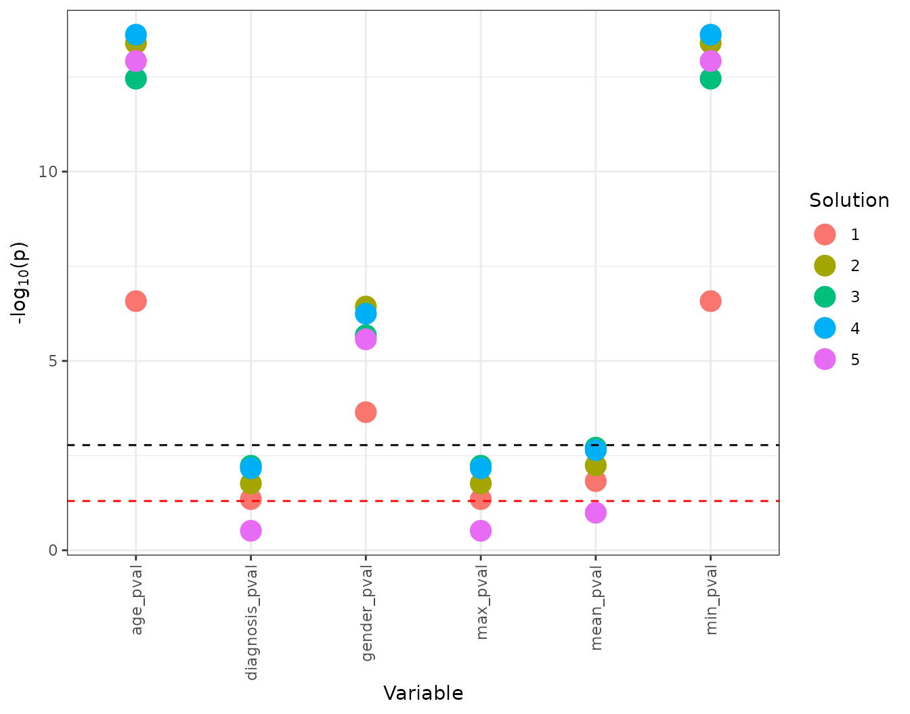

Manhattan Plots
manhattan_plots.RmdManhattan plots can be used to visualize how several cluster solutions in a solutions matrix show separation across variables of interest.
To generate a Manhattan plot, you’ll need to provide a dataframe containing the pvalues of a solutions_matrix.
The example below makes use of expression_df and
methylation_df dataframes, which are both available to you
after loading the metasnf package.
library(metasnf)
# Generate data_list
data_list <- generate_data_list(
list(
expression_df,
"genes_1_and_2_exp",
"gene_expression",
"continuous"
),
list(
methylation_df,
"genes_1_and_2_meth",
"gene_methylation",
"continuous"
),
uid = "patient_id"
)
# Generate settings_matrix
settings_matrix <- generate_settings_matrix(
data_list,
nrow = 5,
max_k = 40,
seed = 42
)
# Run SNF and clustering
solutions_matrix <- batch_snf(data_list, settings_matrix)
# The first (and only) cluster solution:
cluster_solutions <- get_cluster_solutions(solutions_matrix)
head(cluster_solutions)For this particular set of mock data, the separation is so strong that the cluster solutions across all the different runs of SNF were identical. The chunk below perturbs the cluster solutions a little bit to make the purpose of the subsequent Manhattan plot a little easier to see.
# 20% chance of flipping a patient's assigned cluster
noise_two_clusters <- function(two_cluster_solution) {
noisy_solution <- two_cluster_solution |> lapply(
function(x) {
if (runif(1) > 0.80) {
if (x == 1) {
return(2)
} else {
return(1)
}
} else {
return(x)
}
}
) |>
unlist()
return(noisy_solution)
}
for (i in seq_len(ncol(cluster_solutions) - 1)) {
current_col <- i + 1
cluster_solutions[, current_col] <- cluster_solutions[, current_col] |>
noise_two_clusters()
}
# Scrambling the solutions matrix
solutions_matrix[1, cluster_solutions$"subjectkey"] <- cluster_solutions$"1"
solutions_matrix[2, cluster_solutions$"subjectkey"] <- cluster_solutions$"2"
solutions_matrix[3, cluster_solutions$"subjectkey"] <- cluster_solutions$"3"
solutions_matrix[4, cluster_solutions$"subjectkey"] <- cluster_solutions$"4"
solutions_matrix[5, cluster_solutions$"subjectkey"] <- cluster_solutions$"5"We’ll set aside some variables of interest in a target list, use that to calculate p-values for those variables, and supply that information to the manhattan_plot function.
target_list <- generate_target_list(
list(gender_df, "gender", "categorical"),
list(diagnosis_df, "diagnosis", "categorical"),
list(age_df, "age", "numeric"),
uid = "patient_id"
)
extended_solutions_matrix <- extend_solutions(solutions_matrix, target_list)
target_pvals <- p_val_select(extended_solutions_matrix)
manhattan_plot(target_pvals)
The red dotted line represent p = 0.05.